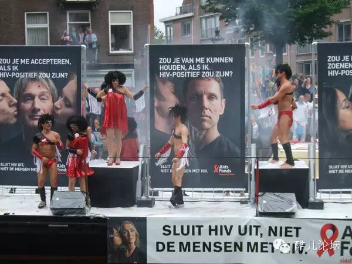

关于艾滋 | 看“性开放”的荷兰如何防控艾滋病？
三年前，有条很火的新闻，说的是荷兰的科学家计划在2050年推出“机器人妓女”项目，用机器妓女取代真人，因为这可大大减少性疾病的产生和传播。“机器人妓女”造价约7000欧元左右，一旦问世，荷兰人将永久改变“卖淫”这一古老交易的性质。
此新闻一出，有网友称该项目值得引进到中国来，因为不仅控制病毒传播有奇效，还能让“一夫多妻”从“地下”转到“地上”，甚至能消灭“嫖幼”、“买处”等现象。让东莞不眠的夜夜笙歌止步于机器人的轰鸣，这位网友这还真是有大工业时代的公民思维。不过，2050年实在太远，我们还是不妨来谈谈荷兰在防治艾滋病方面有哪些经验值得借鉴，说不定比“机器人妓女”要有用的多。
荷兰首都阿姆斯特丹（来源：Flickr/Maurizio Mori）
荷兰是位于西北欧的弹丸小国，国土面积充其量也只有三个北京城那么大，但却被誉为世界上最自由的国家之一。荷兰有四大著名的“合法化”，即“卖淫合法化”、“同性婚姻合法化”、“软毒品合法化”和“安乐死合法化”。但就是这样一个国家，近些年来在防治艾滋病方面却取得了不小的成绩，据有关调查数据显示，目前荷兰在艾滋病防治方面的人均投入位居全球第一，在国际艾滋病防治方面的投入仅落后于英美位居全球第三。
不仅如此，相比于艾滋病在中国正向普通人群蔓延的现状，荷兰的艾滋病病毒携带者分布却呈现非常垂直和集中的态势。据荷兰艾滋病监控基金会的数据显示，截止2015年5月，荷兰艾滋病病毒携带者的人数为2.3万人，约占总人口的0.1%（中国艾滋病感染率为0.058%，系联合国艾滋病规划署2012年数据），这其中主要包括男同性恋人群和来自于艾滋病严重泛滥的国家的移民人群等。
荷兰首都阿姆斯特丹一景（来源：Flickr/Moyan Brenn）
有鉴于此，荷兰卫生、福利和体育部和荷兰传染病控制中心共同开发了一套全面的和立体的艾滋病防治体系，纳入国家发展和国际合作的重点战略框架，建立了由国家财政拨款的非政府组织网络，作为由政府主导的防治艾滋病政策的有利补充，并联合遍布全国的26个艾滋病治疗中心，重点关注年轻人群、男同性恋者人群、移民人群和艾滋病毒携带者四大人群。
荷兰在防治艾滋病方面，或许有以下五点经验值得思考。首先，防治艾滋病，政府机构和非政府组织，一个都不能少。荷兰政府每年资助各类防治艾滋病的非政府组织约1000万欧元，比如荷兰性学研究所、荷兰性病艾滋病防治中心等，这些非政府组织除了政府拨款之外，往往也接受企业和个人的捐赠，或者通过新媒体的手段采取众筹。
这些非政府组织有着不同的工作重点，有的侧重于对于高危人群的介入，有的侧重于艾滋病治疗药物的科学研发，有的负责对艾滋病病毒携带者接受医疗服务的现状进行监测，有的则侧重于对公众意识的倡导和反歧视的宣传等。这些非政府组织站在与艾滋病抗争的一线，与政府主导的模式相当益彰，并能够及时发现艾滋病防治政策方面的软肋和缺陷，向政府提出改进的意见和建议。相比于庞大和臃肿的官僚体系，非政府组织的运作无疑更加灵活高效，所以很多普通的荷兰人也乐意对这些组织解囊相助。
除此之外，荷兰每年还会组织四次全国性的政府组织和非政府组织会议，以方便这些官方和民间的组织及时互相交流信息并协调工作。聪明的荷兰人知道，艾滋病是并非仅凭政府一己之力就能攻克的难题，对于凡事均大包大揽的政府管理思维，在这场战争里是行不通的。

荷兰艾滋病基金会的公益广告（来源：Flickr/Jeroen Mirck）
其次，防治艾滋病不能只谈疾病，不谈权利。荷兰的基本人权政策之一，是任何公民都拥有得到全面的和高质量的医疗服务的权利。荷兰法律规定，荷兰全体国民必须强制购买医疗保险，保险公司不得拒绝为任何投保的公民提供医疗服务，贫困人口还能享受到医疗保险减免补贴的优惠。在2005年，荷兰更是成为全球首个向艾滋病病毒携带者提供人寿保险的国家。荷兰法律还规定，荷兰所有的艾滋病治疗中心必须为艾滋病病毒携带者提供及时、全面和高质量的医疗服务，不得有任何理由的拒诊。
除此之外，荷兰的医院还设置有专门的艾滋病护士，他们均经过专业的训练，懂得如何跟携带者进行沟通和交流。为了保证服务的质量，荷兰还规定了“最少病患原则”，即对每家治疗中心每年的接诊数量进行一定程度的控制和分流，这样可以保证在有限财力和人力的情况下为病患提供最佳的医疗服务。当然，在解决了艾滋病病毒携带者“看病难”之外，荷兰人也意识到，针对艾滋病病毒携带者的歧视尤其是职场上的歧视还普遍存在。因此，荷兰于2009年正式出台法律，责令雇主必须开发出一套反歧视的政策和评估体系，以禁止和消除任何形式的雇主和雇员之间以及雇员和雇员之间的职场歧视，这其中就包括基于疾病和残疾的职场歧视。
第三，卖淫合法化，阻止艾滋病向普通人群传播。性工作者，也就是我们常说的“妓女”、“小姐”等，往往是艾滋病的高危人群。知名性学家潘绥铭有个著名的论断，他说已婚女性将成为性病和艾滋病的最大受害者。这是因为她们的老公更容易在外“买春”或包养“小三”，这远远增加了他们感染艾滋病的风险，这也导致他们的妻子在不知情的情况下也沦为艾滋病的牺牲品。
在第20届国际艾滋病大会上，有研究调查显示，女性性工作者患性病和艾滋病的比率是同年龄普通人群的14倍，各国专家更是联名疾呼，针对性工作者的刑事化已成为全球艾滋病防治的重大障碍。因为如果卖淫在某个国家是非法的，在警方的围攻和骚扰下，性工作者就不得不转入地下，他们不会主动使用或要求嫖客使用安全套，如果一旦感染性病和艾滋病，他们也不愿意主动向外界寻求帮助。
荷兰首都阿姆斯特丹红灯区的性工作者（来源：Flickr/antjeverena）
在这一点上，荷兰人是怎么做的呢？荷兰于2000年实现了卖淫合法化，依据荷兰法律规定，妓院等属于合法的经商场所，18岁以上的男性和女性可自愿成为性工作者，但是妓院必须得到由市政府颁发的许可证，性工作者也必须纳税。法律还规定，妓院获得许可证的前提，是妓院必须采取有效措施确保性工作者只提供安全的性服务，妓院必须鼓励性工作者一年做四次体检，同时妓院还必须为政府组织或非政府组织派遣的性健康教育者们提供方便。
如果妓院无法满足以上条件，市政府有权拒绝颁发许可证或吊销许可证。为了保护性工作者的隐私，所有的性病和艾滋病的检测除了全部免费之外，还必须是自愿和匿名的。据统计调查显示，荷兰目前约有2.5万名性工作者，其中约10%为男性和跨性别性工作者，性工作者中大多数都是来自东欧的移民，来自中国和西非的性工作者也呈上升趋势。尽管近些年来随着红灯区的整顿，性工作者的数量可能有所减少，但得益于卖淫许可证的制度，多数性工作者和嫖客的健康权得以保障，这在一定程度上阻止了艾滋病向普通人群传播。
荷兰首都阿姆斯特丹红灯区性工作者橱窗（来源：Flickr/Michael Coghlan）
第四，尊重和保护同性恋人群，让“好基友”们快乐做自己。在所有感染艾滋病的途径中，男男性行为无疑是高危的，且呈现愈演愈烈之势。因为社会上存在着对于同性恋这一社会现象的种种无知与偏见，这导致许多同性恋者们往往不得不隐瞒自己真实的性倾向，选择与异性进入婚姻，过起“双面人”的暗无天日的生活。这种“双面人”的生活方式，可能会对整个家庭带来巨大的健康风险，因为如果男同性恋者一旦在不知情的情况下感染艾滋病，容易将病毒继而传染给妻子和孩子。而阻断艾滋病这一传播路径的最有效的方法，就是让更少的同性恋者们进入异性恋婚姻。
自上世纪七八十年代起，荷兰便出台了一系列的法律，充分尊重和保护同性恋者们的生存权和发展权，并禁止任何基于性倾向的歧视。2001年，荷兰更是率先成为全球第一个同性婚姻合法化的国家，引发了全球几十个国家的效仿，如今，荷兰的同性伴侣们可以自由选择结婚，他们享受着与异性恋伴侣等同的权利和义务，他们中的大部分人已不再愿意生活在谎言中，敢于在阳光下快乐地生活。虽然同性婚姻合法化无法彻底消灭艾滋病，但是这使得同性恋者们可以自由选择自己的生活，不再碍于来自父辈和社会的压力而被迫进入异性婚姻，这无疑在一定程度上也遏制了艾滋病向更广范围人群的传播。
最后，性教育须从娃娃抓起，莫让无知害了下一代。要想真正做好艾滋病的预防，就不能忽视对于大众尤其是对于下一代的艾滋教育，让他们具备起码的科学素养。与单纯的性健康生理教育不同，荷兰人选择推行的是“全面的性教育”，即不仅要教授下一代什么是月经、什么是怀孕、什么是避孕等等，更重要的是要建立科学的、健康的和积极的性价值观，不再把性看成一味负面的低级趣味，而是把性看成一件美好的、愉悦的事物，尊重和认可性别的多元的同时，学会独立地为自己的身体负责。
基于此，从2012年起，荷兰政府开始在全国学校内强制推行全面的性教育。荷兰的小朋友们从4岁开始就开始接受学校性教育，学校会针对不同年龄段的学生，开发出一整套性教育的课程。除了学校之外，家长也是性教育的重要一环。除非严重影响学习，荷兰的家长们一般不会禁止孩子早恋，他们知道如果一味地禁止反而会助长孩子们的好奇心，因此荷兰的家长会主动鼓励孩子把男朋友或女朋友带回家，参加家庭聚会甚至过夜，这样一方面对于孩子的早恋对象有一定的审查，另一方面还可以控制孩子发生性行为的次数，必要时甚至主动向孩子递套。
荷兰年轻人（来源：Flickr/ PjotrP）
得益于全面性教育的推行，荷兰的少女意外怀孕、堕胎、性病和艾滋病感染率都是全世界最低的。荷兰青少年首次性交的年龄是17岁左右，远远晚于中国的青少年，不仅如此，初夜的时候，超过70%的荷兰青少年懂得使用避孕套，过半会使用避孕药，这其中，30%到40%两者皆使用。也正是得益于这一成功的国家战略，整个荷兰社会对于艾滋病的了解和认知程度都非常高，2009年就有问卷调查显示，在荷兰50岁以下的受访者中，高达70%至92%的受访者能够正确解答有关性病和艾滋病的基本问题；在过去6个月内的短暂亲密关系中，一半的男女都使用了安全套；超过三分之一的男性受访者曾做过性病和艾滋病的检测，仅仅去年检测过的人数就占据了所有受访者的10%。由此可见，许多普通的荷兰人已具备有关的艾滋病的基本科学素养，艾滋病检测甚至已经演变成为了他们的日常习惯。
总之，荷兰人正通过他们高超的政府管理手段，和脑洞大开的别样思维，在不断改写着与艾滋病抗争的历史。或许荷兰人的做法并不见得在他国都适用，但至少应该给予我们一些思考。知名艾滋病专家张北川曾说过，我们要警惕把无知当纯洁，把愚昧当德行，把偏见当原则。在艾滋病这个世界性的难题面前，它值得每一个地球公民警惕。
来源“中华网文化”